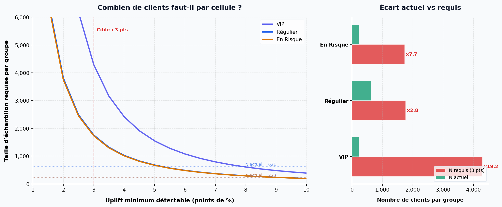

Mesure de l'Incrémentalité & ROI de campagnes CRM (A/B Test)
1. Contexte & Objectif
Dans de nombreuses entreprises, le reporting marketing s'approprie 100 % du chiffre d'affaires des clients contactés. Or une partie de ces clients aurait acheté de toute façon, même sans être sollicités.
L'objectif de ce projet est de dépasser cette vision « vanity metrics » pour isoler la valeur purement incrémentale (Uplift) générée par les campagnes Email et SMS, en comparant les groupes traités à un groupe témoin non sollicité.
2. Pipeline de Données & Méthodologie
Pour éviter tout data leakage, l'historique client est reconstruit strictement à T-1 (veille de la campagne, 01/05/2011) :
3. Résultats Statistiques
L'analyse montre qu'aucune des 6 combinaisons Segment × Canal n'atteint le seuil de significativité statistique (p < 0.05). Les variations observées — positives ou négatives — ne peuvent pas être distinguées du bruit statistique.
| Segment | Canal | N traités | Conv. traités | Conv. témoins | Uplift (pts) | P-Value | Significatif ? | CA Incrémental |
|---|---|---|---|---|---|---|---|---|
| VIP | 223 | 33.6 % | 42.4 % | −8.7 | 0.212 | Non | −14 125 € | |
| SMS | 274 | 37.6 % | 42.4 % | −4.8 | 0.493 | Non | −10 917 € | |
| Régulier | 621 | 12.6 % | 9.9 % | +2.6 | 0.387 | Non | +5 578 € | |
| SMS | 602 | 12.1 % | 9.9 % | +2.2 | 0.465 | Non | +4 179 € | |
| En Risque | 225 | 7.1 % | 9.7 % | −2.6 | 0.501 | Non | −2 358 € | |
| SMS | 227 | 7.9 % | 9.7 % | −1.7 | 0.658 | Non | −1 481 € |
4. Pourquoi rien n'est significatif ? (Power Analysis)
Avant de conclure à l'inefficacité des canaux, il faut se demander : l'expérience avait-elle la puissance statistique nécessaire pour détecter un effet ?
La réponse est non. Une analyse de puissance a posteriori montre que pour détecter un uplift de 3 points de pourcentage avec 80 % de puissance et un seuil α = 0.05, il aurait fallu :
Tailles d'échantillon requises par cellule (pour détecter 3 pts d'uplift) :
VIP : ≈ 4 300 (vs 223 actuels — ×19 trop petit)
Régulier : ≈ 1 760 (vs 621 actuels — ×2.8 trop petit)
En Risque : ≈ 1 730 (vs 225 actuels — ×7.7 trop petit)
Les résultats non significatifs étaient donc prévisibles. L'absence de preuve d'effet n'est pas une preuve d'absence d'effet.

5. Insights & Recommandations
1. Les résultats sont non concluants, pas négatifs.
Avec des p-values toutes supérieures à 0.20, on ne peut ni confirmer ni infirmer l'effet des campagnes. L'uplift négatif observé sur les VIP (−8.7 pts Email) est probablement du bruit d'échantillonnage dû au très petit groupe témoin (~59 VIP témoins). Ne pas le confondre avec un effet de cannibalisation réel.
2. Le segment « Régulier » est le plus prometteur pour un re-test.
C'est le seul segment affichant un uplift positif (≈ +2.5 pts) sur les deux canaux. Bien que non significatif, c'est un signal encourageant. Une recommandation concrète : relancer un test A/B sur ce segment avec ≥ 1 800 clients par cellule pour obtenir un résultat fiable.
3. Privilégier l'Email pour l'expérimentation.
Le coût d'envoi Email est dérisoire (0.45 € pour 225 contacts vs 24 € pour 602 en SMS). Même en cas d'uplift nul, le risque financier de l'Email est quasi inexistant. Le SMS ne se justifie que si un uplift supérieur y est démontré statistiquement.
4. En conditions réelles : intégrer la power analysis en amont.
Ce projet illustre un piège classique : lancer un test A/B sans avoir d'abord vérifié que la taille d'échantillon est suffisante. En pratique, le calcul de puissance doit être fait avant le lancement, pas après — pour éviter de gaspiller du budget sur un test qui ne pourra jamais conclure.
6. Limites de l'exercice
- L'assignation des campagnes a été simulée aléatoirement. Une vraie campagne intègrerait le consentement (opt-in/opt-out) et une randomisation stratifiée.
- L'attribution est de type « Last Click » simple, sur une fenêtre de 15 jours. En production, un modèle d'attribution multi-touch serait plus approprié.
- Le groupe témoin (10 %) est trop petit pour certains segments. Un ratio 50/25/25 aurait donné plus de puissance statistique.
- Les coûts de routage utilisés (0.2 ct/email, 4 ct/SMS) sont des estimations moyennes — les coûts réels varient selon le prestataire.
Accéder aux Livrables
Explorez le dashboard interactif ou plongez dans le code :